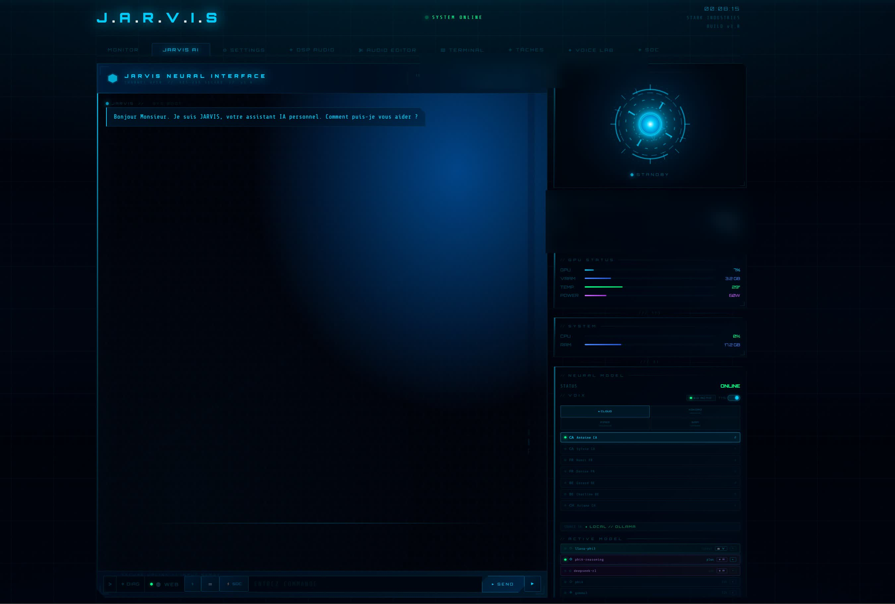

UN ASSISTANT IA 100% LOCAL · QUI PARLE · QUI RAISONNE · QUI DÉFEND

« Bonjour Monsieur. Je suis JARVIS, votre assistant IA personnel. »
Pas un chatbot de plus. JARVIS est un orchestrateur : il parle de sa propre voix, raisonne sur 4 modèles spécialisés, se souvient (mémoire vectorielle locale) — et surtout, il défend une infrastructure de sécurité tout seul, 24h/24. Le tout sur une seule machine, sans envoyer une seule donnée à l'extérieur.
Architecture, diagrammes, captures — la vitrine technique complète
JARVIS est un serveur Flask local exposant une interface web holographique. Il orchestre plusieurs moteurs IA en local uniquement, avec un pipeline audio complet (STT → LLM → DSP → TTS) et une intégration bidirectionnelle avec le dashboard SOC.
Interface web holographique — ~18 000 lignes HTML/CSS/JS, 7 onglets, zéro framework. Thème cyberpunk Iron Man avec preloader typewriter, scan lines et effets lumineux.
JARVIS s'intègre dans le SOC Dashboard en tant que moteur d'analyse IA. Il expose des routes REST qui permettent au dashboard de déclencher des analyses LLM et d'exécuter des actions de sécurité via CrowdSec sur le reverse proxy. JARVIS est optionnel — le SOC reste 100% fonctionnel sans lui.
| Méthode | Route | Usage SOC |
|---|---|---|
| GET | /api/gpu | Stats GPU → tuile RTX 5080 dans le dashboard |
| POST | /api/chat | Analyse LLM des données SOC (auto-engine 60s) |
| GET | /api/tts | Lecture vocale des alertes SOC (edge-tts) |
| GET | /api/security | Journal blocklist LLM → tuile GARDE-FOU |
| POST | /api/soc/ban-ip | Ban IP via CrowdSec sur le reverse proxy |
| POST | /api/soc/unban-ip | Lève un ban CrowdSec |
| POST | /api/soc/restart-service | Redémarre un service autorisé |
| GET | /api/soc/actions | Journal des actions proactives → tuile SOC |
Déploiement local sur machine Windows avec GPU NVIDIA. Python 3.11, Ollama, edge-tts et faster-whisper forment la colonne vertébrale. La configuration se fait via fichiers JSON — aucune variable d'environnement système requise.
scripts/ ├── jarvis.py # Orchestrateur Flask (75 routes · backend ~13 000 lignes · modulaire) ├── templates/ │ └── jarvis.html # Interface UI holographique (~18 000 lignes · 25 modules JS) ├── jarvis_model.json # Modèle Ollama actif (phi4:14b par défaut) ├── jarvis_llm_params.json # Paramètres LLM : temp, top_p, num_ctx, num_predict └── jarvis_dsp_params.json # Paramètres DSP + moteur TTS actif
# Dépendances principales pip install flask flask-cors requests psutil # TTS — synthèse vocale (Antoine) pip install edge-tts # STT — reconnaissance vocale pip install faster-whisper # GPU monitoring (NVIDIA) pip install pynvml # Mémoire vectorielle (RAG) + débruitage # mxbai-embed-large (via Ollama) · DeepFilterNet (CUDA)
{
"model": "phi4:14b" // modèle SOC par défaut
}
// Modèles : phi4:14b · qwen2.5-coder:14b · qwen3:8b · gemma4 · mxbai-embed-large
// JARVIS fonctionne exclusivement en local via Ollama.
// Aucun envoi de données vers un service cloud.
{
"temperature": 0.7, // créativité (0.1 précis → 1.0 créatif)
"top_p": 0.9, // nucleus sampling
"num_ctx": 8192, // taille contexte (tokens)
"num_predict": 512, // longueur max réponse
"preset": "ÉQUILIBRÉ" // RAPIDE | ÉQUILIBRÉ | QUALITÉ
}
# Installer les modèles Ollama avant de démarrer ollama pull [MODEL_NAME] ollama list # vérifier les modèles disponibles # Lancer JARVIS cd scripts/ python jarvis.py # → Serveur Flask démarré sur http://localhost:5000 # → Ouvrir le navigateur sur http://localhost:5000 # Arrêt propre (Windows) # stop_jarvis.bat ou Ctrl+C dans le terminal # Vérifier que le port est libre avant relance netstat -ano | findstr :5000
# Dans le SOC Dashboard (monitoring-index.html) # Renseigner l'URL JARVIS dans les paramètres du dashboard : JARVIS_URL = "http://[JARVIS_HOST]:5000" # Routes exposées par JARVIS pour le SOC : GET /api/gpu → stats GPU temps réel POST /api/chat → analyse LLM narrative GET /api/tts → lecture vocale alerte GET /api/security → journal garde-fou LLM POST /api/soc/ban-ip → ban via CrowdSec POST /api/soc/unban-ip → lever un ban POST /api/soc/restart-service → redémarrer un service # JARVIS est optionnel — le SOC fonctionne sans lui
Ce projet a été conçu et développé en collaboration avec Claude AI (Anthropic) — Claude Code. L'ironie n'est pas perdue : un assistant IA local construit avec l'aide d'une IA.